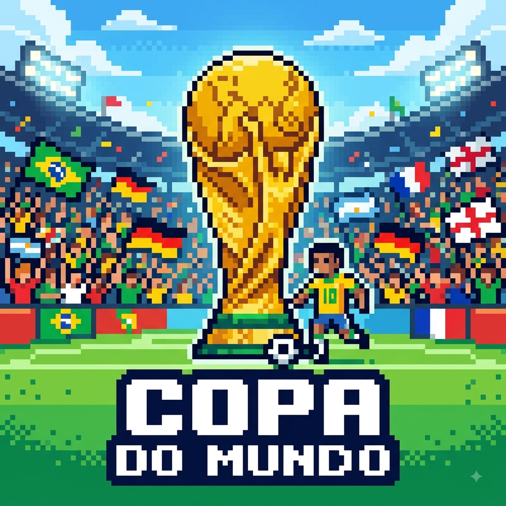
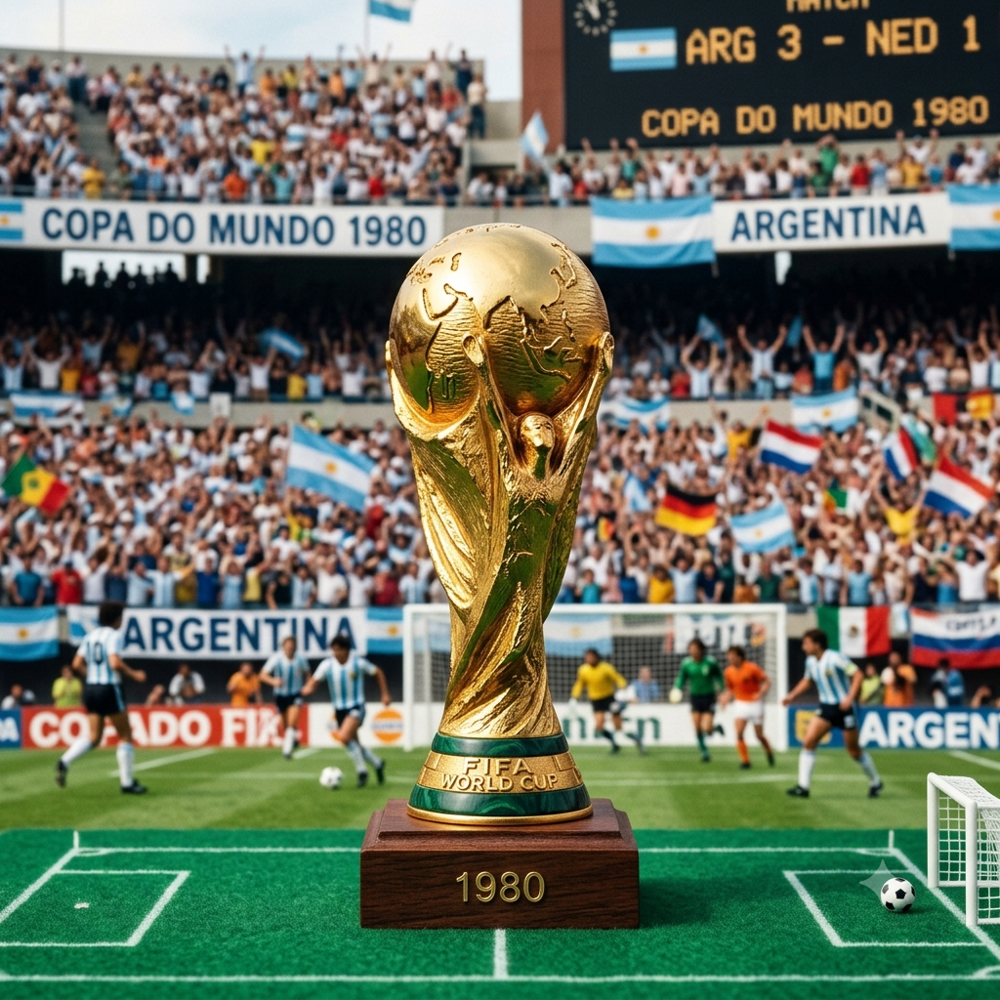

Meu primeiro post
Por:Vanessa Chusca
Seja bem-vindo! Encontre aqui tudo sobre a Copa do Mundo: notícias, tabelas, estatísticas e curiosidades em um só lugar. Viva a emoção do Mundial com a gente!
companhe a cobertura dos jogos, tabela de classificação atualizada, estatísticas das seleções e as últimas notícias do maior torneio de futebol do planeta.

Por:Vanessa Chusca
Seja bem-vindo! Encontre aqui tudo sobre a Copa do Mundo: notícias, tabelas, estatísticas e curiosidades em um só lugar. Viva a emoção do Mundial com a gente!

Por:Vanessa Chusca
A Copa do Mundo é o maior torneio de futebol do planeta, organizado pela FIFA a cada quatro anos. O evento reúne as melhores seleções do mundo em uma disputa intensa que mobiliza bilhões de torcedores em todos os continentes.